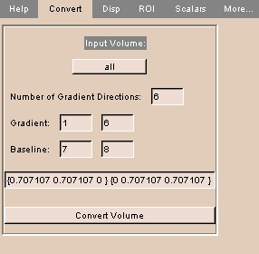
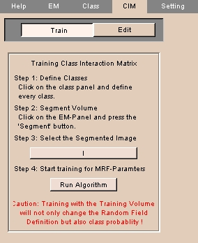

Using Modules A-H
Anatomy module
The Anatomy module lets you save Slicer scenes as files for the SPL Anatomy Browser.
There is one tab: Anatomy.
Anatomy tab
The Anatomy tab lets you save the current scene for the SPL Anatomy Browser.
To use the Anatomy tab:
|
- Click the Anatomy tab. The panel at left appears.
- Enter the Scene name.
- Enter the Output directory for the created file.
- Enter the Directory for temporary files.
This directory will contain temporary files while the output file is being created. After the file is created, you can delete the files in the temporary directory.
- Click Volume and select the volume from the drop-down list.
- Click Label map and select the label map from the drop-down list.
NOTE: Labels must match the model order inside the MRML file and have consecutive label numbers.
- Click Shrink to change the size of the 3D Viewer to 384-by-384 pixels, which is the standard of the SPL Anatomy Browser.
- Click Restore window to change the size of the 3D Viewer to full size.
- Select a name for the view from the list, or click Add to enter a new name for the list. To delete a name, select the name and click Delete.
- Click Go! to create the file. The file appears in the Output directory.
|
Anno module
Slicer can display graphical and text annotations on images in the Viewer window. The Anno module lets you control these annotations.
This can be useful for orienting images correctly, and for formatting images for output.
There are two tabs: Visibility and Mode.
To save annotation options, click File, then click Save Current Options. This will save your options to a file called Options.xml.
Visibility tab
The Visibility tab provides controls for determining which annotations will be visible.
To use the Visibility tab:
|
- Click the Visibility tab. The panel at left appears.
- To display a 3D wireframe cube, click 3D Cube.
- To display 3D coordinate axes, click 3D Axes.
- To display letters that label the 3D coordinate axes, click 3D Letters.
- To display colored 3D outlines around each slice, click 3D Outline around slices.
- To display a crosshair on 2D slices, click Crosshair.
- To display hash marks on the crosshair on 2D slices, click Hash marks.
NOTE: Crosshair must be on to display hash marks.
- To display text on 2D slices (including axis labels, coordinate values, and foreground and background values), click Slice window text.
|
Results of Visibility
| 3D Cube on |
3D Axes on |
3D Letters on |
3D Outline around slices on |
|
|
 |
|
| Crosshair on |
Hash marks on |
Slice window text on |
|
|
|
Mode tab
The Mode tab lets you choose:
- coordinate system displayed on slices
- precision to display pixel values
- whether axes or cube should follow the focal point
To use the Mode tab:
|
- Click the Mode tab. The panel at left appears.
- Select the coordinate system to display with the Slice Cursor, as follows:
- Click RAS to select RAS coordinates, which give the coordinates of the slice cursor as the physical location in Right-left, Anterior-posterior, Superior-inferior form, in millimeters.
- Click IJK to select IJK coordinates, which give the coordinates of the slice cursor in terms of which pixel on which slice.
- Click XY to select XY coordinates, which give the coordinates of the slice cursor as the number of pixels from the left and from the bottom, respectively.
- Select how to display the values of the foreground and background of the pixel on the 2D Viewer, as follows:
- Click 1 to display the values as integers.
- Click 1.00 to display the values to two decimal places.
- Click full to display the values to all decimal places.
- Click Axes follow focal point to have the coordinate axes follow the focal point when you move the mouse in the 3D Viewer.
- Click Cube follows focal point to have the bounding cube follow the focal point when you move the mouse in the 3D Viewer.
|
BIRNDUP module
The BIRNDUP module acts as an interface to deidentify and upload DICOM volumes to BIRN (Biomedical Informatics Research Network).
There is one tab: BIRNDUP.
BIRNDUP tab
The BIRNDUP tab runs the interface to deidentify and upload DICOM volumes.
To use the BIRNDUP tab:
|
- Click the BIRNDUP tab. The panel at left appears.
- To choose an active volume, click Active Volume and select a volume from the drop-down list.
- Click Run Interface to start the BIRN Deidentification and Upload Pipeline.
|
Colors module
The Colors module lets you:
- create color names and associate colors with each name
- associate one or more labels with each color name
- define color properties, including how ambient, diffuse, and specular a color is
- load predefined sets of colors
This can be useful for distinguishing structures, combining multiple data sets, and formatting images for output.
There are two tabs: Edit Colors and Load Colors.
Edit Colors tab
The Edit Colors tab provides controls for creating color names, defining color properties, and associating colors and labels with color names.
To use the Edit Colors tab:
|
- Click the Edit Colors tab. The panel at left appears.
- To create a new Color Name, enter the name and click Add.
- To delete an existing Color Name, select the name in the list and click Delete.
- To associate a label with a Color Name, select the name in the list, enter the label in the Label field, and click Add.
- To remove a label from a Color Name, select the Color Name in the list, select the Label in the list, and click Del.
- To adjust color properties, select the Color Name in the list, then adjust the sliders for:
- Red
- Green
- Blue
- Ambient: how much light the material is emitting. A value of 1 is a light source.
- Diffuse: how much light the material is reflecting in random directions.
- Specular: how shiny the material is, from reflecting light like a mirror.
- Power: the intensity of the specular reflection.
Then click Update.
|
Load Colors tab
The Load Colors tab lets you load predefined sets of colors.
To use the Load Colors tab:
|
- Click the Load Colors tab. The panel at left appears.
- Click Browse and select a MRML file that contains color definitions, then click Load.
|
CorCTA module
The CorCTA module extracts centerlines for vessels.
There is one tab: Centerlines.
Centerlines tab
The Centerlines tab provides controls for extracting centerlines from a label map. NOTE: This can take a long time.
To use the Centerlines tab:
|
- Click the Centerlines tab. The panel at left appears.
- Click Input volume to select a loaded label map.
- Enter a Model name for this use.
- Select Lines to generate lines.
- Select Fiducials to generate fiducial points.
- Select Surfaces to generate surfaces.
- Select Smooth lines to smoothe the generated lines.
- Enter a Segment length in mm.
- Click Extract Centerlines to generate centerlines using the specified parameters.
|
CrossSection module
The CrossSection module lets you position a virtual camera in the scene, and view what the camera sees in a second window.
You can also have the camera move along a pre-defined path.
This is useful for examining structures that can't be viewed from outside the model.
There are three tabs: Display, Path, and Advanced.
Display tab
The Display tab lets you control what is displayed, and how large the display is.
To use the Display tab:
|
- Click the Display tab. The panel at left appears.
- To change the width of the CrossSection View, click choose and select a width from the drop-down menu. Alternatively, enter the Width.
- To toggle the Main View display (namely, the 3D Viewer with the virtual camera), click Show Main View.
- To toggle the CrossSection View display (namely, what the virtual camera sees in the scene), click Show CrossSection View.
- To toggle the 2D Viewer display, click Show 2D Slices.
- To toggle hiding the CrossSection View on exiting, click Hide CrossSection View on Exit.
|
CrossSection Display
| Main View, with camera pointing out |
CrossSection View |
|
|
Path tab
The Path tab lets you describe a path along which the virtual camera will move.
The virtual camera will display the scene from the path as it moves.
You can set the path using automatic and advanced settings.
To use the Path tab automatically:
|
- Click the Path tab, then click Automatic. The panel at left appears.
- Click Choose an Active Model and select an active model from the list.
- To select a start point, move the cursor on the model and press
p.
To select a different start point, click Select another point, then select a start point.
- To select an end point, move the cursor on the model and press
p.
To select a different end point, click Select another point, then select an end point.
- Click Extract Centerline to automatically generate a path from start point to end point.
|
Custom module
The Custom module is a sample module for developers. It contains typical labels and controls to show how to add a Slicer module. The source code is at http://www.na-mic.org/ViewVC/index.cgi/slicer2/Base/tcl/tcl-modules/Custom.tcl?root=Slicer2&view=log.
There is one tab for illustration purposes.
CustomCsys module
The CustomCsys module is a sample module for developers. It shows how to display and control a Csys actor. The source code is at http://www.na-mic.org/ViewVC/index.cgi/slicer2/Base/tcl/tcl-modules/CustomCsys.tcl?root=Slicer2&view=log.
There is one tab: Coord Sys.
Coord Sys
The Coord Sys tab allows you to translate and rotate the Csys actor.
To use the Coord Sys tab:
|
- Click the Coord Sys tab. The panel above appears.
The Csys actor appears in the 3D Viewer.
- To translate the Csys actor, left-click on one of the axes and move the mouse in the desired direction.
- To rotate the Csys actor, right-click on one of the axes and move the mouse in the desired direction.
|
DTMRI module
The DTMRI module allows users to create displays and perform calculations for diffusion tensor MRI research.
There are seven tabs: Convert, Disp, ROI, Scalars, Save, Advanced, and Devel.
Convert
The Convert tab allows the user to convert volumes into DTMRI volumes.
To use the Convert tab:
|  |
- Click the Convert tab. The panel at left appears.
- Click Input Volume and select a loaded volume from the drop-down list.
- Enter the Number of Gradient Directions (usually 6).
- Enter first and last diffusion-weighted Gradient image numbers at the first slice location.
- Enter first and last Baseline (non-gradient, not diffusion-weighted) image numbers at the first slice lodation.
- Enter a list of diffusion gradient direction vectors.
- Click Convert Volume to convert the volume.
|
Display
The Display tab allows the user to control the display of DTMRI volumes.
To use the Display tab:
|
- Click the Display tab. The panel at left appears.
- Click Active DTMRI and select a DTMRI volume from the drop-down list.
- Select the type of 3D View Settings, either DTMRIs to view the 3D DTMRI as transparent slices or default to return to the Slicer default settings.
- Next to Display Glyphs, click On to display each DTMRI as a glyph, or Off to not display glyphs.
- Select where to display glyphs: Red to display in the leftmost slice, Yellow to display in the center slice, Green to display in the rightmost slice, or Vol to display in the volume.
- Next to Display 'Tracts', click On to display all tracts, Off to hide all tracts, or Delete to clear all tracts.
- Click Visualization Menu to select one of the following options:
- Click Glyphs to control display of glyphs.
- Click Glyph Type and select Axes, Lines, Ellipsoids, or Boxes from the drop-down list.
- If displaying DTMRI as lines, click Max to use the eigenvector corresponding to the largest eigenvalue, Middle to use the eigenvector corresponding to the middle eigenvalue, or Min to use the eigenvector corresponding to the smallest eigenvalue.
- Click Color by and select whether to color DTMRI according to Linear, Planar, or Spherical measures, or according to Max, Middle, Min, or MaxMinusMiddle eigenvalue, or according to relative anisotropy (RA) or fractional anisotropy (FA), or according to the direction of the major eigenvector.
- Next to Scalar Bar, click On to display a bar showing the correspondence between numbers and colors or Off to hide the bar.
- Select Scalar Range as either Auto to use the largest and smallest scalars to define the range, or Manual to choose the range using the Lo and Hi sliders.
- Click Tracts to control display of tracts.
- Click Color to select the color for the tracts.
- Select Color by as either SolidColor to use solid color on streamlines or MultiColor to color by scalars from the data.
- Enter Max Length, the maximum propagation distance, beyond which tractography will stop.
- Enter Step Size, the integration step length to use when following a path.
- Enter Smoothness (along), the length of each displayed tube segment.
- Enter Radius, the initial thickness of each displayed tube.
- Enter Smoothness (around), the number of sides on each displayed tube.
- Enter Direction, the number of directions to follow from each initial point (1 or 2).
- Click AutoTracts to automatically start tractography from each voxel in an ROI.
- Click ROI Labelmap and select the label map to seed tracts from the drop-down list.
- Click Label to select the color to use to seed the tracts.
- Click Seed 'Tracts' in ROI to begin seeding a tract from each point in the ROI. This can take a long time.
- Click SaveTracts to save visible tracts.
- Click Save tracts in model file to save the currently visible tracts as a model.
- Click Save tracts in vtk file to save currently visible tracts as a polyline. FOR DEVELOPERS ONLY.
|
ROI
The ROI tab tbd.
To use the ROI tab:
|
- Click the ROI tab. The panel at left appears.
|
Scalars
The Scalars tab tbd.
To use the Scalars tab:
|
- Click the Scalars tab. The panel at left appears.
- Click Active DTMRI and select a DTMRI volume from the drop-down list.
- Click Create Volume to select the type of volume to produce, including grayscale volume from Trace, Determinant, RelativeAnisotropy, FractionalAnisotropy, LinearMeasure, PlanarMeasure, SphericalMeasure, MaxEigenvalue, MiddleEigenvalue, and MinEigenvalue, and 3-component color volume from ColorByOrientation, D11, D22, and D33.
- Next to ROI, click None to derive the scalar volume from the entire DTMRI volume using no ROI, Threshold to mask the DTMRI using the thresholded area defined in the ROI before creating the scalar volume, or Mask to mask the DTMRI using the label map volume defined in the ROI tab before creating the scalar volume.
- Enter the Scale Factor to multiply by the output image for better viewing.
|
Save
The Save tab tbd.
To use the Save tab:
|
- Click the Save tab. The panel at left appears.
- Click Active DTMRI and select a DTMRI volume from the drop-down list.
- Click Save Tensor to save the tensor in vtk file format.
- Click Save streamlines in scaled IJK to save streamlines.
|
EMSegment module
The EMSegment module lets you automatically segment a volume using the Expectation-Maximization optimization technique (see http://www.ai.mit.edu/people/tkapur/phdthesis1999.pdf for further information).
This produces an intensity-based classification of voxels in the image into different tissue classes.
There are four tabs: EM, Class, CIM, and Setting.
EM tab
The EM tab provides a step-by-step process for segmenting images.
To use the EM tab:
|
- Click the EM tab. The panel at left appears.
NOTE: This is Step 1 of a four-step process.
- Available volumes appear in the Volume List.
Select the aligned grayscale volumes to segment and click => to move to the Input Greyscales list.
- Click Step2.
|
|
- The panel at left appears.
NOTE: This is Step 2 of a four-step process.
- Enter the following information:
- No. of Classes: the number of classes to segment the image into.
- Iterations: the number of times to run the algorithm.
Values between 10 and 20 are suggested.
- Boundary Min and Boundary Max: the slices along each IJK direction to segment. These three limits define the boundary box.
- Click Step3.
|
|
- The panel at left appears.
NOTE: This is Step 3 of a four-step process.
- For each of the number of classes you entered in Step 2:
- Assign a label to the class by clicking Assign Label and selecting or defining a label.
- Enter a value for the global probability of this class.
- Assign a probability map by clicking Assign Probability Map and selecting a probability map from the drop-down list.
- Generate an intensity distribution by clicking either Auto or Manual.
If you click Manual, use Ctrl-Left mouse button to take samples for the class.
- Click Next to configure the next class, or Prev to configure the previous class.
- Click Class Overview to display the configuration for all classes.
- To start the EM Segmentation process, click Run.
NOTE: This can take a long time (several hours), depending on the number of iterations, the number of slices, and the number of classes.
|
Class tab
The Class tab lets you configure more complicated classes.
To use the Class tab:
|
- Select the class from the drop-down menu at the top.
- To use samples to calculate the Mean and Covariance, check the Use Sample box.
Otherwise, to enter values manually, leave Use Sample unchecked and enter Mean and Covariance.
- Enter the Probability for this class.
- Click Prob. and select a probability map from the drop-down list.
- Enter the Shape Parameter. This defines the importance of the shape constraints in the overall structure's posterior calculation, with 1 being very important and 0 being totally unimportant.
- Enter the Prob Data Weight to assign a weight to the probability.
- Enter the Input Channel Weights to assign a weight to the input channel.
- To display the class distribution for this class, click Class Distribution.
- To display the class overview, click Class Overview.
- To promote this class to a super class, check the Super Class box. This panel appears:
- Enter a Name for this super class.
- Enter the Class Probability for this super class.
- Enter the number of classes for this super class.
- Enter the Probability Data Weight for this super class.
- Enter the Input Channel Weights for this super class.
- To display the class distribution for this class, click Class Distribution.
- To display the class overview, click Class Overview.
|
CIM tab
The CIM tab lets you define how neighboring voxels affect the probability of a given voxel. CIM stands for class interaction matrix.
To use the CIM tab:
|
- Click Edit to edit the class interaction matrix. The panel at left appears.
- To define the location of the neighbor with respect to the voxel, click West, East, North, South, Up, or Down.
- Enter probabilities in the Class Interaction Matrix. Each column represents the current voxel, and each row represents the neighbor of that voxel.
|
|  |
- Click CIM.
- Click Train to train the class interaction matrix. The panel at left appears.
NOTE: Before training the class interaction matrix, use the Class to define every class and use the EM tab to segment the volume.
- Click Step 3 to select the segmented image.
- Click Run Algorithm to start training for MRF (Markov Random Field) parameters.
|
Setting tab
The Setting tab lets you configure and save advanced parameters for the EM algorithm.
To use the Setting tab:
|
- Click Setting. The panel at left appears.
- Enter advanced parameters for the EM algorithm.
- To save settings, click Save Setting.
|
Endoscopic module
The Endoscopic module lets you position a virtual endoscopic camera in the scene, and view what the camera sees in a second window.
You can also have the camera move along a pre-defined path.
This is useful for examining structures that can't be viewed from outside the model.
There are four tabs: Display, Camera, Path, and Advanced.
Display tab
The Display tab lets you control what is displayed, and how large the display is.
To use the Display tab:
|
- Click the Display tab. The panel at left appears.
- To toggle the Main View display (namely, the 3D model with the virtual camera), click Show Main View.
- To toggle the Endoscopic View display (namely, what the virtual camera sees in the scene), click Show Endoscopic View.
- To toggle the 2D Viewer display, click Show 2D Slices.
- To toggle hiding the Endoscopic View on exiting, click Hide Endoscopic View on Exit.
|
Endoscopic Display
| Main View, with camera pointing out |
Endoscopic View |
|
|
Camera tab
The Camera tab lets you set the location and orientation of the camera within the scene.
To use the Camera tab:
|
- Click the Camera tab. The panel at left appears.
- Click either absolute (to position camera with respect to the world coordinate system) or relative (to position camera with respect to the current camera position).
- Use the sliders to adjust the Camera Position, or enter values in the fields. Click reset to set parameters back to their original values.
- Use the sliders to adjust the Camera Orientation, or enter values in the fields:
- Yaw is rotation right (positive) or left (negative).
- Pitch is rotation up (positive) or down (negative).
- Roll is rotation around the direction of view, clockwise (positive) or counterclockwise (negative).
Click reset to set parameters back to their original values.
You can also use the 3D Gyro to change the position or orientation of the camera.
- Toggle 3D Gyro on by clicking Use the 3D Gyro.
Axes appear on the camera symbol.
- Left-click and move an axis to change the position of the camera.
- Right-click and move an axis to change the orientation of the camera.
|
Camera Orientation
| Yaw = 45 degrees |
Yaw = 315 degrees |
|
|
Path tab
The Path tab lets you describe a path along which the virtual camera will move.
The virtual camera will display the scene from the path as it moves.
You can set the path manually or automatically.
To use the Path tab manually:
|
- Click the Path tab, then click Manual. The panel at left appears.
- To use an existing path, click Select a Path and select a path from the list.
Otherwise, to define a new path, enter a name in the create a new Path field.
- To create landmarks (namely, the points between which the segments of the path run),
position the endoscope within the scene and click Add Landmark.
The landmark will become part of the path.
A small sphere will appear in the scene at the landmark location, with an arrow showing direction.
- To modify a landmark, select the landmark in the scene and press
q.
Change the position or orientation of the landmark, then click Update.
- To delete a landmark, select the landmark in the scene and press
d.
The selected landmark is deleted.
- To move the camera along the path, click Show Fly Through Panel.
The Fly-Through Panel below appears.
- To move the camera along the path, click Fly-Thru.
The virtual camera will move along the path.
- To start the camera back at the beginning of the path, click Reset.
- To stop the camera during its motion along the path, click Stop.
- To move to a specific frame, use the Frame slider, or enter a value in the Frame field.
- To change the speed of the virtual camera along the path, use the Speed slider, or enter a value in the Speed field.
- To specify the number of points per millimeter, enter a value in the unlabeled field.
|
To use the Path tab automatically:
|
- Click the Path tab, then click Automatic. The panel at left appears.
- Click Choose an Active Model and select an active model from the list.
- To select a start point, move the cursor on the model and press
p.
To select a different start point, click Select another point, then select a start point.
- To select an end point, move the cursor on the model and press
p.
To select a different end point, click Select another point, then select an end point.
- Click Extract Centerline to automatically generate a path from start point to end point.
- To move the camera along the path, click Show Fly Through Panel.
The Fly-Through Panel below appears.
- To move the camera along the path, click Fly-Thru.
The virtual camera will move along the path.
- To start the camera back at the beginning of the path, click Reset.
- To stop the camera during its motion along the path, click Stop.
- To move to a specific frame, use the Frame slider, or enter a value in the Frame field.
- To change the speed of the virtual camera along the path, use the Speed slider, or enter a value in the Speed field.
- To specify the number of points per millimeter, enter a value in the unlabeled field.
|
To use advanced path options:
|
- Click the Advanced tab. The panel at left appears.
- To change the size of a voxel, enter a value for VoxelSize.
- To limit the maximum distance displayed, enter a value for Max. Dist.
- Use the Visualization plane offset slider to change the offset of the visualization plane.
- To use the exponential decrease algorithm to compare distances and select the center point, click Use exponential decrease.
- To use the squared decrease algorithm to compare distances and select the center point, click Use squared decrease.
- To use the linear decrease algorithm to compare distances and select the center point, click Use linear decrease.
- If you load a 3D model without 2D slices, you can define a 2D surface to intersect with the model. This intersection defines a label map. To view this label map, click Visualize LabelMap.
- You can color the model to indicate distance from the outside. This is useful for visualizing the the centerline path that Slicer can generate automatically. To view this coloring, click Visualize DistanceMap.
|
Advanced tab
The Advanced tab lets you configure the appearance of the camera itself and the angle that its lens subtends.
To use the Advanced tab:
|
- Click the Advanced tab. The panel at left appears.
- To toggle display of the camera, click Camera.
- To change the size of the camera, use the Size slider, or enter a value in the Size field.
- To change the color of the camera lens, click the color bar next to Camera Lens. A window will open. Select or create a color.
- To change the color of the camera boxs, click the color bar next to Camera Box. A window will open. Select or create a color.
- To toggle display of the focal point, click Focal Point.
- To change the color of the focal point, click the color bar next to Focal Point. A window will open. Select or create a color.
- To toggle display of the 3D gyro, click 3D Gyro.
- To change the size of the 3D gyro, use the Size slider, or enter a value in the Size field.
- To change the angle that the lens subtends, use the Lens Angle slider, or enter a value in the Lens Angle field
- To toggle showing the inside of models, click Show Inside Models.
|
Fiducials module
The Fiducials module lets you create and manage fiducial points.
Fiducial points are reference points on a 2D slice or a 3D model.
They are useful for making measurements and establishing landmarks for analysis.
There are two tabs: Display and Edit.
Edit tab
The Edit tab lets you create and edit lists of fiducial points.
To use the Edit tab:
 |
- Click the Display tab. The panel at left appears.
- To create a new fiducials list, enter a name for the new list in the Create a Fiducials List field.
Otherwise, to use an existing list, click Fiducials List and select an existing list.
The points in the list should appear in the list on the panel.
- To add new fiducial points to the list, place the cursor where you want the point and press
p. The new point should appear in the list, and on the Viewer.
- To select or unselect a fiducial point, place the cursor on the point and press
q.
- To delete a fiducial point, place the cursor on the point and press
d.
- To delete the active list, click Delete Active List.
|
Display tab
The Display tab lets you control which fiducial points are displayed, and how large the display is.
To use the Display tab:
|
- Click the Display tab. The panel at left appears.
- To display all the fiducial points, click Show All.
- To display none of the fiducial points, click Show None.
- To display some of the fiducial points, toggle each list of points by clicking on its name
- To change the size of the symbol for each fiducial point, use the Symbol Size slider next to the name of the list.
- To change the size of the text for each fiducial point, use the Text Size slider next to the name of the list.
|
Guidance module
The Guidance module lets you select and display two target points in the 3D Viewer. You can reformat slices perpendicular to a line between these two target points.
This is useful for reformatting slices between two landmarks, such as the incision point and the target tissue of the surgery.
There is one tab: Target.
Target tab
The Target tab lets you position and use the two target points.
To use the Target tab:
|
- Click the Target tab. The panel at left appears.
- To position the red target point click Red. To position the yellow target point, click Yellow.
- Click Show Target. The selected target point appears on the 3D Viewer.
- Change the Target Position with the sliders.
- To use the active target point as the focal point (center of rotation in 3D Viewer), click Use as Focal Point. This can be useful to examine an off-center model.
- To reposition the image along the line between the target points, click View Trajectory.
|
Using Guidance
| 3D Viewer with 2 target points |
After clicking View Trajectory |
|
|